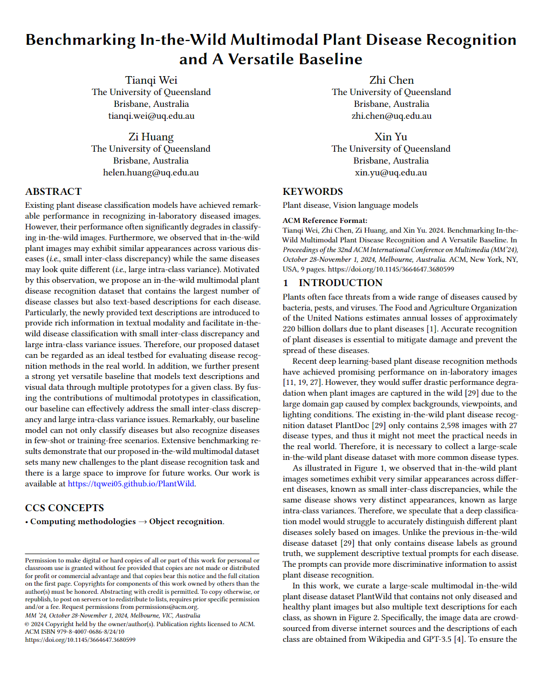

Benchmarking In-the-Wild Multimodal Plant Disease Recognition and A Versatile Baseline
| Tianqi Wei | Zhi Chen | Zi Huang | Xin Yu |
Introduction
Existing deep-learning methods have achieved remarkable performance in recognizing in-laboratory plant disease images. However, their performance often significantly degrades in classifying in-the-wild images. Furthermore, we observed that in-the-wild plant images may exhibit similar appearances across various diseases (i.e., small inter-class discrepancy) while the same diseases may look quite different (i.e., large intra-class variance). Motivated by this observation, we propose an in-the-wild multimodal plant disease recognition dataset, PlantWild, which contains the largest number of disease classes but also text-based descriptions for each disease. PlantWild is currently the largest dataset containing wild plant disease images.
Method
Code of our baseline MVPDR is available through https://github.com/tqwei05/MVPDR.
The workflow of MVPDR is presented as the following figure.
It models text descriptions and visual data through multiple prototypes and can achieve outstanding performance on in-the-wild plant disease images.
Paper
|  |
"Benchmarking In-the-Wild Multimodal Plant Disease Recognition and A Versatile Baseline", Tianqi Wei, Zhi Chen, Zi Huang, Xin Yu. ACM International Conference of Multimedia 2024 [PDF] |
BibTeX
@inproceedings{MVPDR,
title={Benchmarking In-the-Wild Multimodal Plant Disease Recognition and A Versatile Baseline},
author={Wei, Tianqi and Chen, Zhi and Huang, Zi and Yu, Xin},
booktitle={ACM International Conference of Multimedia},
year={2024}}